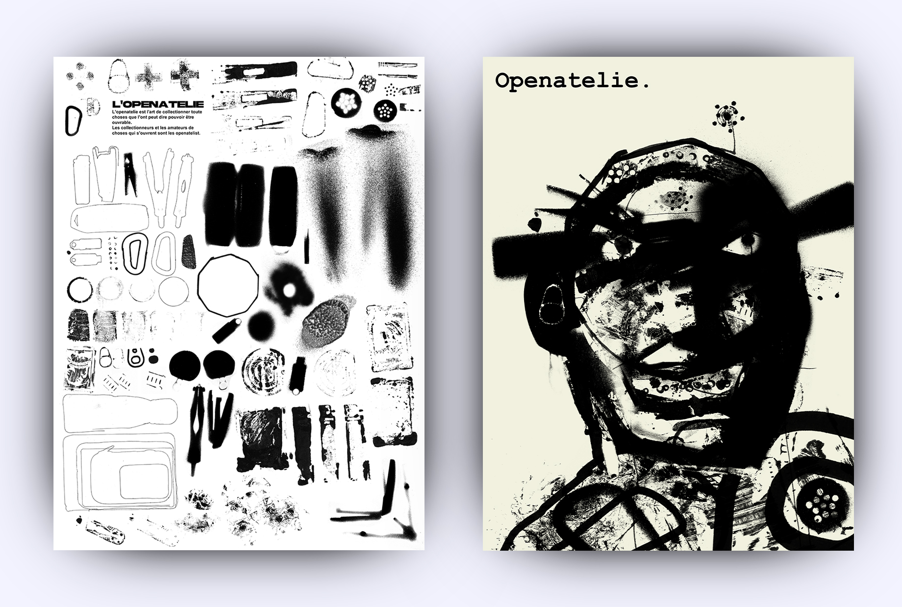
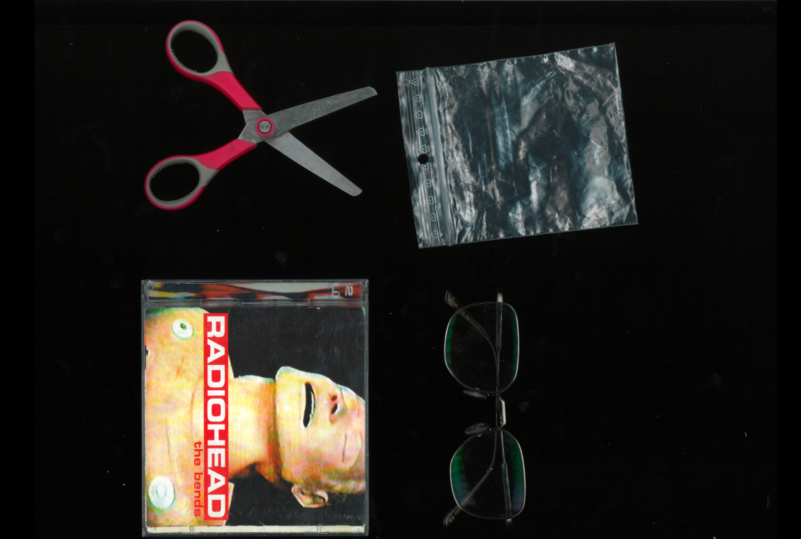
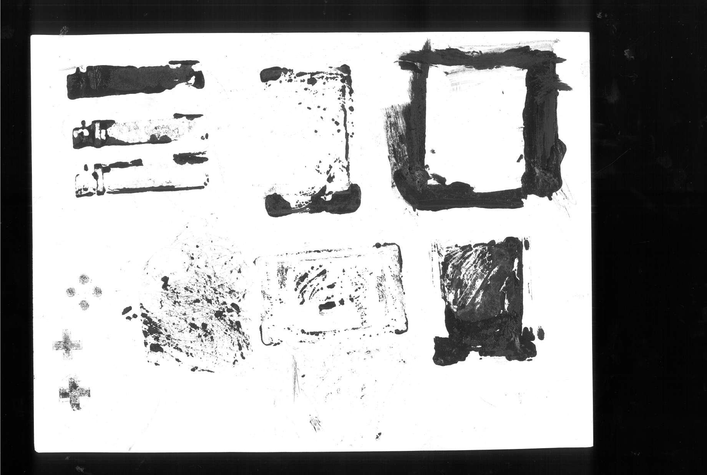
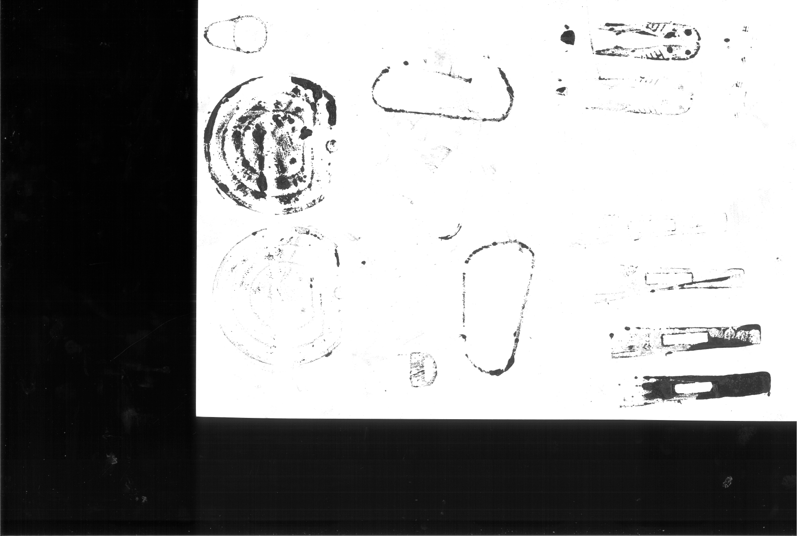
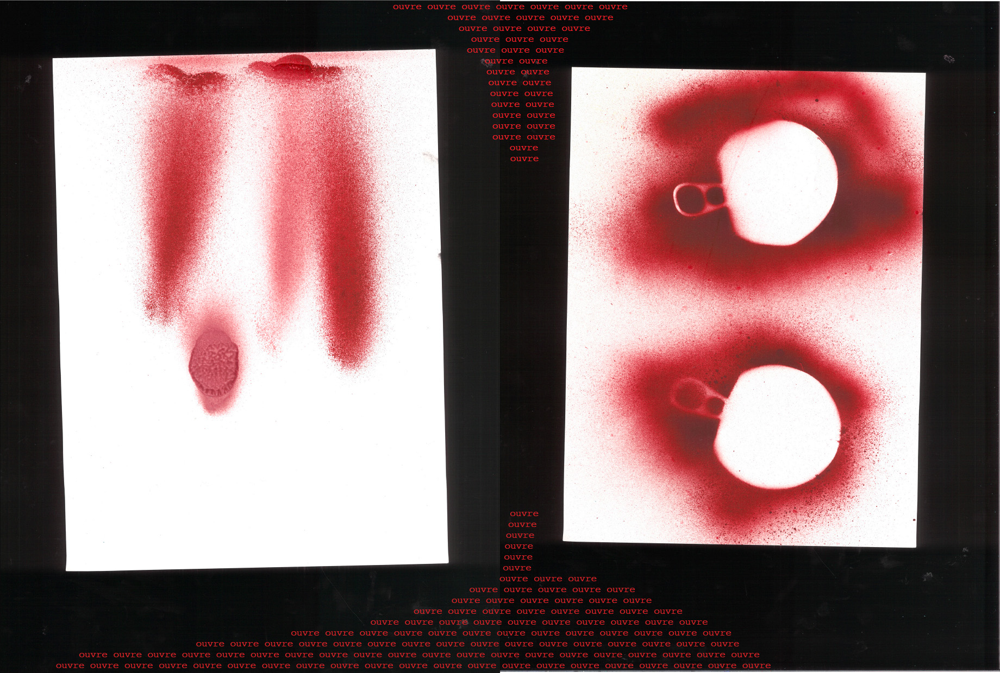

Openatelie.
L'objectif de se projet était de regrouper un collection d'objet qui partagent un point commun. j'ai choisi de faire une collection d'objet des quel il est possible de dire qu'ils sont ouvret ou fermé. Ensuit l'objetif etait d'experimenter avec les objets afin d'obtenir un banc d'élément graphique a l'image de la collection d'objet.
J'ai ensuit utiliser cette collection graphique pour produire deux affiches un et une edition qui travers l'emsemble des experimentations realisé. dans un univers graphique abstrait et énignmatique.
Pratiques utiliser :
-
- scans et photographies d'objets
- peinture et dessin manuel
- retouches et manipulations numériques
- mise en page
- création d'affiche
- création d'édition









